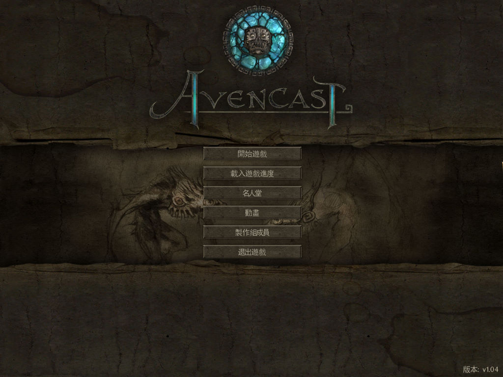
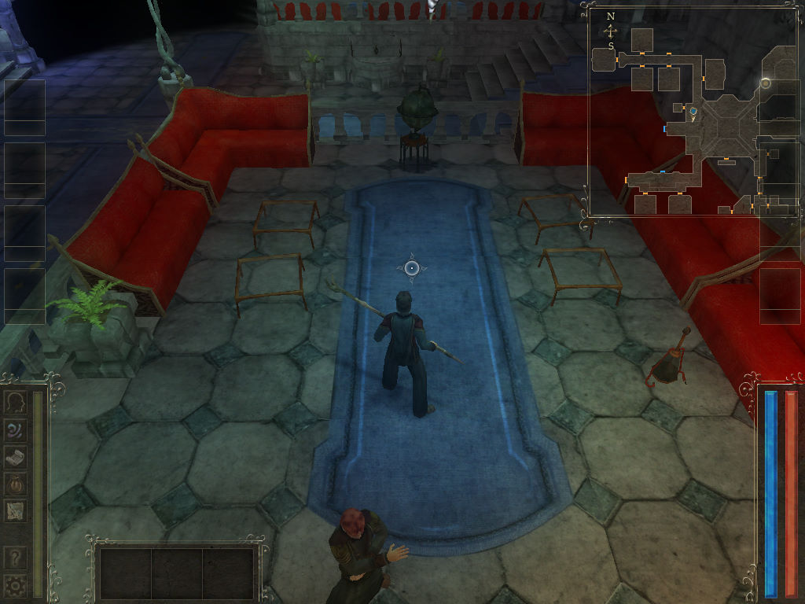

名稱：暗黑魔法師：崛起 (Avencast: Rise of Mage，中文版)
簡介：ClockStone 2007年出品的角色扮演遊戲，由Lighthouse代理發行，2008年由松崗中文
化並代理發行，以3D畫面呈現，採單人即時方式戰鬥 [待補]。


備註：本版為繁中1.04版
保護：光碟SecuROM 7.37，可使用SRLoader啟動（勾選繞過遊戲自校驗）
備註：若無法播放動畫，請安裝vidc.WMV3解碼程式wmv9vcm.dll。
檔案：nocd104_cht.rar = 繁中1.04免光碟檔